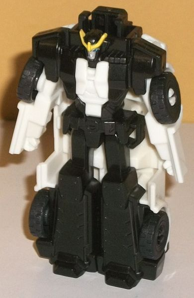

Difficulty of Transformation : Very Easy
Color Scheme : White, moderately dark arctic blue, very dark flat navy blue, and some silver, yellow, black, moderately light blue, and dull forest green
Individual Rating : 2.4
Allegiances
: Autobot
Size:
Crash Combiner 2-pack
Overall Rating
: 4.0
(NOTE: Because this set is a repaint, this
is not a full-blown review. This mainly covers any changes made to the
molds and the color schemes, and merely compares them to the original RID2015
Primestrong Crash Combiner. For a review on the mold itself, read the review
of the original RID2015 Primestrong set
here
.)
 Optimus
Prime (Lunar Force)
Optimus
Prime (Lunar Force)
Difficulty of Transformation
: Very
Easy
Color Scheme
: White, moderately
dark arctic blue, very dark flat navy blue, and some silver, yellow, black,
moderately light blue, and dull forest green
Individual Rating
: 2.4
"Lunar Force" Optimus
Prime looks a lot like
Blizzard Strike Optimus
Prime
. I know they're both cold, but the Moon is, y'know... NOT covered
with snow... Anyways, the main color of Lunar Force Prime is the same as
Blizzard Strike Prime's; a somewhat dark shade of arctic blue which looks
pretty icy. Just like with Blizzard Strike Prime, this toy also has a fair
amount of very dark navy blue used as the contrasting blue color, mostly
used on the folded-up chest piece on the top of the truck and on the body
of the robot mode. The new color here is white on Prime's legs and arms,
likely used to help him blend in with Strongarm better in their combined
mode. Black is used in mostly the same places here as on the original version
of this toy-- that is, on the wheels, part of the connector piece, and
painted on the front truck windows and on the faux window on Optimus' chest.
Optimus' robot face is painted silver with light blue eyes, and the dull
forest green color that's used on all Crash Combiners is used here on the
arrow on his combiner port, as well. Unfortunately, he still needs vastly
more paint, and using the two different shades of blue and white doesn't
"pop" as much to me as his normal colors, even if it's more original.
No mold changes have
been made to Lunar Force Optimus Prime.
 Strongarm
(Lunar Force)
Strongarm
(Lunar Force)

Difficulty of Transformation
: Very
Easy
Color Scheme
: Black, white, and
some yellow, silver, moderately light blue, red, and dull forest green
Individual Rating
: 3.2
As with Optimus, Lunar
Force Strongarm looks... familar. An awful lot like
Patrol
Strongarm
, that is, in that her color scheme is more of a strict "black-and-white"
scheme, with blue being taken almost entirely out of the picture. Her robot
mode in particular is basically just these two colors, which honestly just
looks boring. It's too monochrome and there isn't enough visual interest
there, and not nearly enough paint as well-- the only paint in her robot
mode is the silver on her face, light blue on her eyes, and the yellow
on her headcrest. All those other details really needed some more color!
In police car mode she fares a bit better. The amount of black and white
is roughly flipped, so she's still pretty monochrome, and her windows are
painted black as well; that said, the forest green on the arrow on her
combiner port, as well as the red and blue painted on her sirens, help
break up the colors at least slightly more. (She still definitely needed
more colors/paint, though.)
No mold changes have
been made to Lunar Force Strongarm.
 Primestrong
(Lunar Force; Combined Form)
Primestrong
(Lunar Force; Combined Form)
Difficulty of Transformation
: Easy
Individual Rating
: 6.4
Since the individual
parts are straight redecoes, Lunar Force Primestrong himself is, of course,
a straight redeco as well. The blues of the Prime half and the whites of
the Strongarm half go pretty well together, with the very dark navy blue
of Optimus and the black of Strongarm essentially being close enough to
each other to be the same color and "unite" the two halves as far as the
colors go. Unfortunately, one of the few new paint apps in this mode is
essentially useless, as the faux window detail on the chest is painted
black-- on the
very dark navy blue plastic
. So it's VERY hard to
see. Given how many other obvious details are apparent but have no paint,
that was a definite waste of a paint app. The headsculpt has the headcrest
painted yellow like Strongarm's, with a silver faceplate and blue eyes
like Prime's. Given the white coloration of the rest of the head, I feel
this head more effectively "merges" the two heads compared to the original
Primestrong, where the influence of Prime was more apparent than Strongarm's
on the combined mode head.
The Lunar Force Primestrong
set was just... not needed. Both the color schemes of the individual 'bots,
as well as that of the combiner mode, might not necessarily be bad, but
they aren't as good as on the original Primestrong set. There were no "Lunar
Force" redecoes on the show, or even really a theme for the season, and
these aren't new characters either. You'd be forgiven for thinking "Lunar
Force" was an ongoing theme in the toyline too because of the way this
toy was packaged, but no, these are the only "Lunar Force" toys. So if
you're going to skip one Crash Combiner set, I'd make it this one.
Review by Beastbot